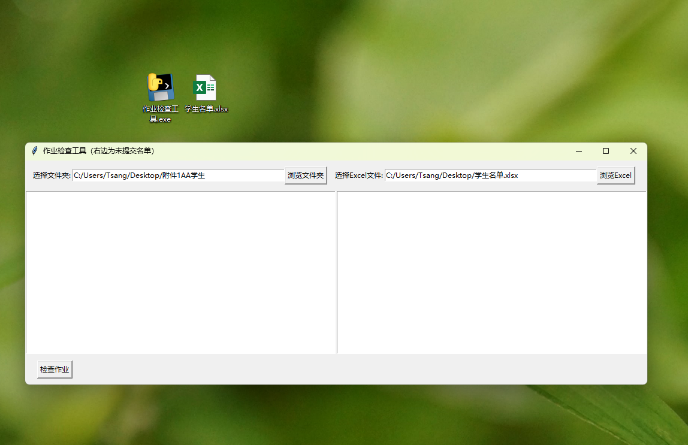
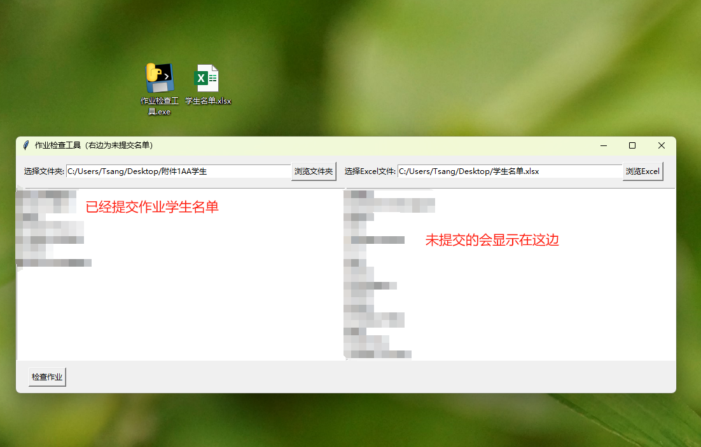

本程序可实现根据已有的excel学生名单表格，对应着文件夹中无论是文件还是文件夹，根据名称结合excel名单筛选出未提交作业的学生。
首先打开应用有两个版块，左右会显示已经提交学生，右边则显示未提交。
左边选择要检查的文件夹，右边选择班级的学生名单。
点击“检查作业”，即可筛选出已经提交作业和未提交作业的学生。
通过这个软件，可以实现检查作业。结合前面的文件提取软件，批量提取学生作业，然后再通过这个检查作业程序，在很快的时间内筛选出未提交学生的名字，并且做好统计，这样可以更加高效快速的解决收作业问题。